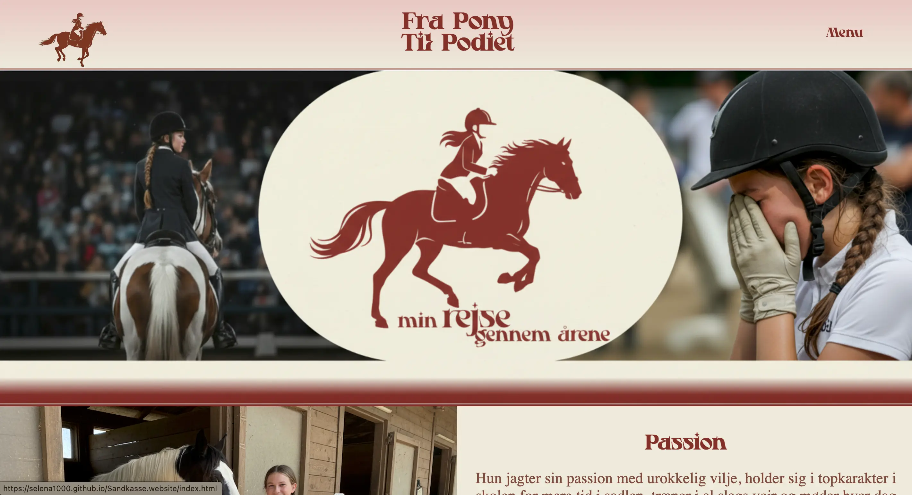
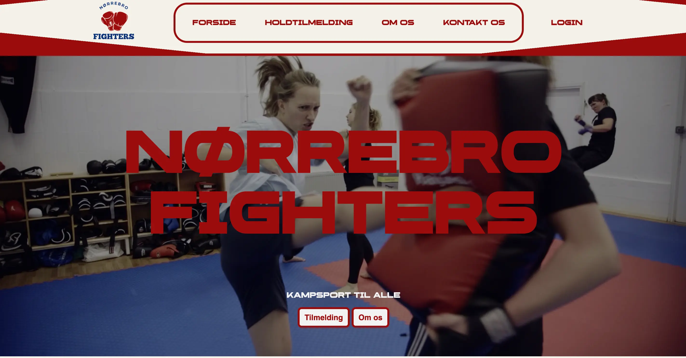

I tema 5 fik vi en grundlæggende indførsel i indholdsproduktion, herunder præ-produktion, selve produktionen, samt postproduktion. Vi arbejdede med mindre indholdsproduktion (smartphone kamera til fotografering) og animeret vektorgrafik. Vi skulle derudover benytte vores færdigheder, fra de goregående temaer til redesign af en virksomheds hjemmeside.

Den første projekt i temaet, var at producere indhold til et sandkasse site, hvor vi øver os i den teknologi og det indhold, som blev demonstreret i Adobe Illustrator og Adobe Photoshop. Da vi ikke skulle bruge lang tid på denne projekt, var løsningen baseret mere på mavefornemmelse og antagelser.
Det andet projekt var et gruppearbejde med formål af redesign af et virksomheds hjemmeside. Vi tog udgangspunkt i Nørrebro Fighters hjemmeside og lavede redesign som vi selv har fundet på. Vi stødte på et essentielt problem, og det var at vi ikke måtte tage vores egne billeder og derfor kunne vi ikke udgøre kriteriet af indholdsproduktion. Som gruppe delte vi en del opgaver op og med små udfordringer og uenigheder, nåede vi frem til et ønsket redesign og layout af deres hjemmeside.

Da det var min første gang at arbejde med andre med både det kreative process og kodning, samt github, var det en del udfordrende da vi som gruppe ikke nåede det hele. Vores kommunikation var ikke perfekt, og det kunne vi som gruppe havde gjort bedre. Da vi ikke havde så meget tid til at kode, valgte vi at springe over media queseries grundet deadline.